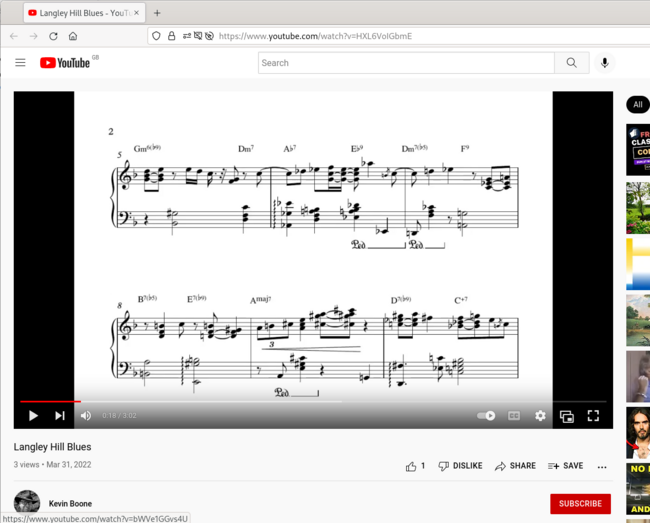
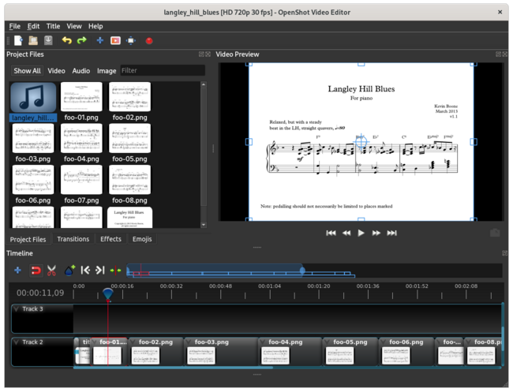

Creating an "animated score" for demonstrating musical compositions on YouTube, etc
 It has become quite common to show animated musical scores on
YouTube and similar platforms. These allow a viewer to see the music
score, whilst listening to the music. Watching an animated score is
an effective way to begin to learn to perform a piece of music, and
composers often use them to showcase their work.
It has become quite common to show animated musical scores on
YouTube and similar platforms. These allow a viewer to see the music
score, whilst listening to the music. Watching an animated score is
an effective way to begin to learn to perform a piece of music, and
composers often use them to showcase their work.
Here is an example of how a score might be rendered in YouTube (there is a link to the real thing below).

In this article, I explain one way to create such an animated score, suitable for uploading to YouTube, using OpenShot and other Linux tools. I recognize, however, that you might prefer to use something other than Linux (gasp!) to edit the score itself. I use Sibelius for this -- there are Linux score editors, but I've never found any of them as productive as Sibelius. Your mileage may vary, of course.
The basic principle is to turn the printable score into a set of images, that can be lined up alongside an audio recording in a video editor. Sibelius outputs printable scores in PDF format -- I imagine that most most similar products do. If your score editor can output a set of image files, one per page, then that's most of the problem solved already.
Before starting, you'll need to be aware of the requirements of the particular video sharing platform you use. As I understand it, YouTube favours MP4 files with H.264 video encoding and AAC audio encoding. There is some flexibility about the resolution and aspect ratio, but most content producers favour the standard HD resolutions of 720p and 1080p. OpenShot, like most video editors, can easily be configured to output these formats. In the following explanation, I assume a 720p resolution at 24 frames per second.
Step 1 -- create a suitably-sized PDF of the score
I suspect that most people who compose music, and produce a printable score, do not do so with YouTube in mind. Sibelius defaults to producing an A4-sized, portrait-orientation printed score, and sets itself up with that in mind. Apart from the issues of resolution (displayed sizes of note-heads, text, etc), no portrait orientation will work well as a YouTube video.
I find that if I set Sibelius up to use an A5, landscape printed score, the resulting resolution and aspect ratio works reasonably well with YouTube. A5 does not have the same aspect ratio of any of the common video formats -- it's about 1.42, rather than 16/9. This means that an A5 rendering will be a little less wide than a standard format. The video editor will fill the extra width with something -- usually just black, but this can be configured.
Why not use A4 landscape, if it's the orientation that's the problem? Score editors like Sibelius are set up to assume they're creating a printed page, that has to be readable at a particular distance. Choosing A4, even landscape, will lead to too much detail (too many staves and notes) to be comfortable on a screen. You should bear in mind that people might watch your video on a cellphone, so packing too much detail into each page is likely to be counterproductive. However, if you're showing a score with many parts -- a chamber orchestra, perhaps -- you might have to live with it. In any event, some experimentation with the document size will likely be necessary, to get the best results, particularly if you can't predict the viewer's screen size.
Step 2 -- split the PDF scre into a number of individual PNG images
The nicest way I've found to do this is to use pdftoppm:
$ pdftoppm -png scale-to-y 720 -scale-to-x -1 langley_hill_blues.pdf foo
This will split the PDF into files foo-01.png,
foo-02.png, etc. "foo" is a lazy choice for a filename,
but these files are ephemeral -- they don't need to
be stored because they can be created from the PDF at any time.
Since I'm aiming to produce a 720p video file, I've set pdftoppm to output a file that is 720 pixels tall, and with a width that is
compatible with the original aspect ratio. I don't want to stretch
or otherwise distort the image. Because A5 aspect ratio is not the
same as 720p, I end up with images whose sizes are
1022 x 720 pixels. That leaves 29 pixels on each side of the image
that contain no data. The video editor will quietly fill these in.
Will the video editor not scale the images to fit 720p on its own?
It will, but there are two reasons not to let it. First, using
pdftoppm without setting a size will result in its defaults
being used. While these are reasonable if they result in the video
editor scaling the image down to fit the screen, the
results will be very ugly if the images have to be scaled up.
More subtly, the generation of the PNG image from the PDF is itself a scaling operation, because PDF text is a vector (line) drawing, not a bitmap raster. If you let the video editor scale the image, the result will be that it gets scaled twice, with a concommittant loss of quality. All in all, it's better to get the scaling right at the point when the PDF is converted to PNG, where you can control it, and there will be no loss of fine detail.
Step 3 -- obtain and prepare the audio
I can't really comment on the first part of this: you might perform the music yourself, or use somebody else's recording, with due regard to intellectual property rules, of course. YouTube is often able to detect, and reject, copyright-infringing soundtracks.
YouTube recommends that uploaded videos contain audio tracks with at least 128 kbits/sec bitrate.
For best audio quality, you should use an audio recording format that does not need to be converted -- AAC in the case of YouTube. OpenShot will output AAC audio when configured to use one of the standard "HD" video profiles (see below). So supplying an AAC audio file will result in fewer conversions and probably a slightly better audio quality. In practice, if you have only an MP3 recording, the built-in conversion done by OpenShot is probably acceptable -- the viewer is probably not going to be listening to your audio on a top-notch hi-fi system.
Incidentally, I've found that OpenShot does not do very well when asked
to handle uncompressed audio (e.g., WAV files).
I guess the sheer volume
of data just overwhelms it. It works better (for me) if I convert such
files to AAC
first using, for example, ffmpeg.
Step 4 -- create opening and closing titles if required
You might want to show titles or credits, before or after the music. This can be done, for example, using Gimp. To avoid unnecessary scaling, try to make the title images the same size as the individual pages of music, and matching the video format. Again, OpenShot can adjust automatically, but you're likely to get slightly better image quality if you take charge of it.
Step 5 -- edit using OpenShot
OpenShot, with all its myriad dependencies, is a huge install -- more
than a gigabyte. It's in the repositories for many popular Linux
distributions; for Ubuntu, you should be able to install it simply
using apt-get openshot.
Binaries for Fedora/RHEL are available from RPM Fusion.
Although OpenShot is a very sophisticated piece of software, for this application its operation is almost trivial. First, import the music file and drop it into one of the tracks. Then place the various image files, in the right order, on one of the other tracks. The image file markers can be moved and stretched on the track, so that they each start at the right point in the music.
This timing adjustment is really the only slightly tricky part of the process, and getting it spot-on is necessary, if you want to get professional-looking results. You can disguise inaccuracies in this area by allowing the images to overlap, so that the video fades from one to the next. However, I think a clean cut from one image to the next, between the exact two notes if possible, looks better.
It's probably advisable to have fade-in and fade-out transitions at the beginning and end of the video, rather than having an abrupt start and end, but this is a matter of taste.
Here's what OpenShot looks like for my example, with the various images and the audio track imported.

Step 6 -- export from OpenShot
The "Export video" feature provides a number of preset configurations, or you can tune the individual settings if you know how, and have a lot of patience.
I find that the preset target "MP4 H.264" with profile "HD 720p 24fps", works well for YouTube, although I'm sure there are alternatives. This produces a file whose size is about 10Mb for each minute of music; this is much larger than it really needs to be, given that the video frame-rate might actually only be a few frames per minute. However, in the end, I'm not paying for YouTube's storage, and this is the format they recommend.
Here is the finished result on YouTube.